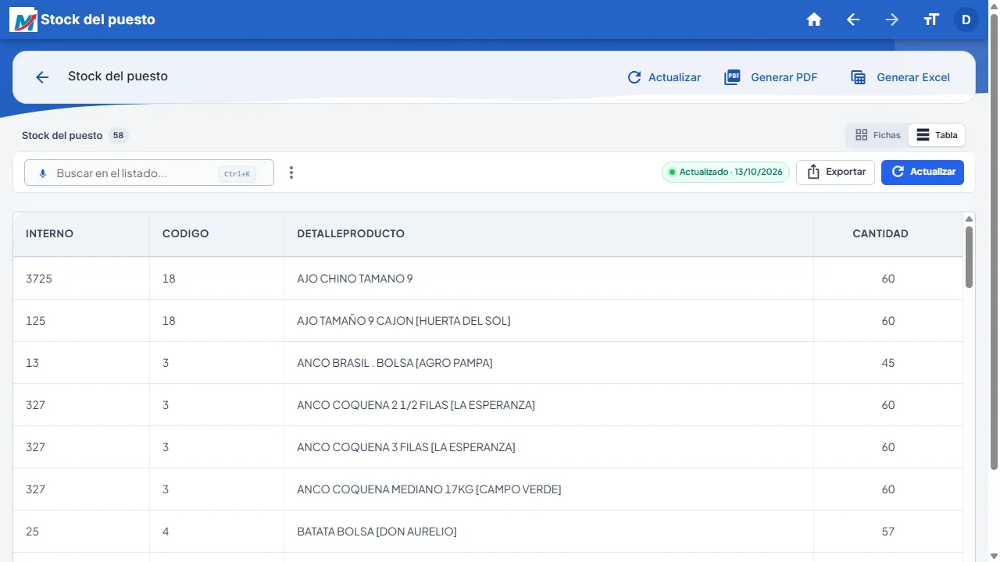
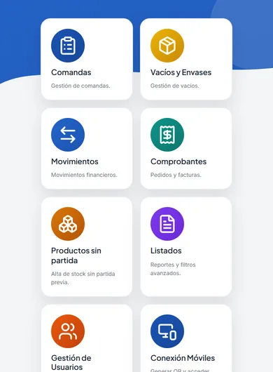
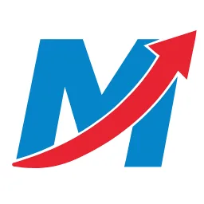

Marketsis PV — Punto de venta mayoristaWholesale point of sale
Punto de venta para puestos mayoristas de frutas y verduras del Mercado Central. Arma comandas, cobra pedidos y facturas, gestiona vacíos y envases, caja (arqueo, alivio, gastos, adelantos), movimientos de stock por partida y listados exportables a PDF y Excel.
Point of sale for wholesale fruit & vegetable stalls. Handles orders, payments and invoices, crate and packaging returns, cash register (counts, withdrawals, expenses, advances), stock movements by lot and reports exportable to PDF and Excel.
- Servidor local por puesto (FastAPI + SQL Server) que se anuncia en la red por mDNS; el celular se empareja escaneando un QR.
- Per-stall local server (FastAPI + SQL Server) announced over mDNS; phones pair by scanning a QR.
- Una sola base de código para Windows (Electron + instalador firmado), Android e iOS (Capacitor), con versionado unificado.
- One codebase for Windows (Electron + signed installer), Android and iOS (Capacitor), with unified versioning.
- Licencia atada al hardware, sincronización con la nube y servidor de demo para la revisión de las tiendas.
- Hardware-bound licensing, cloud sync and a demo server for app store review.